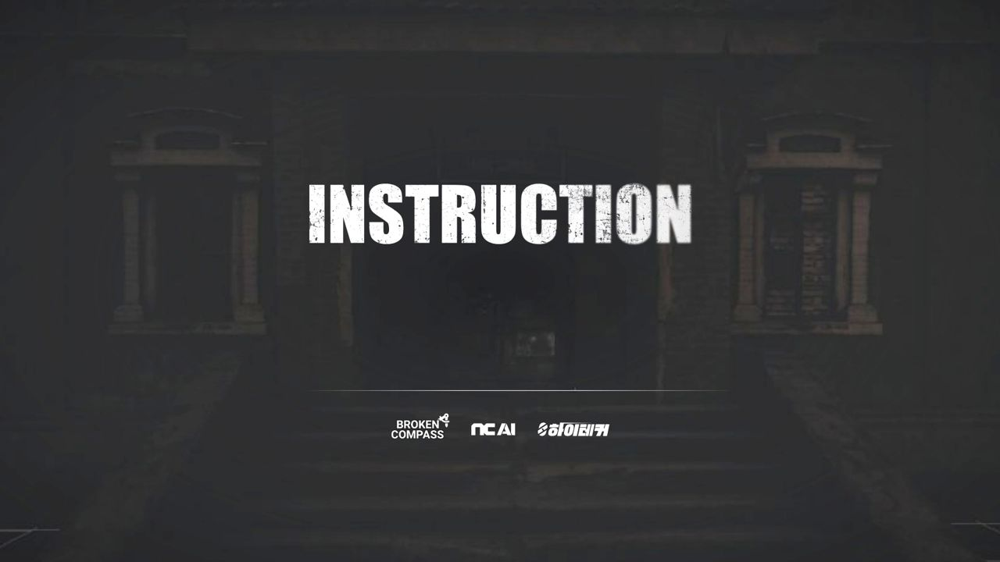
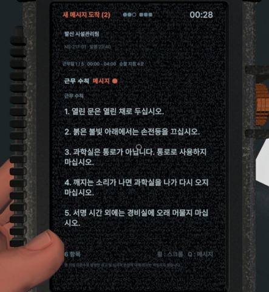
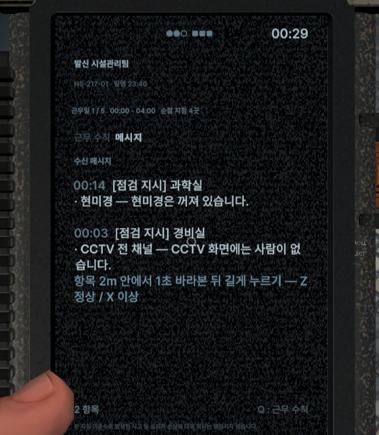
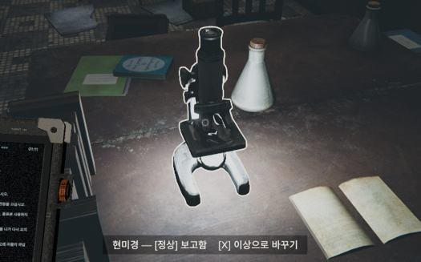
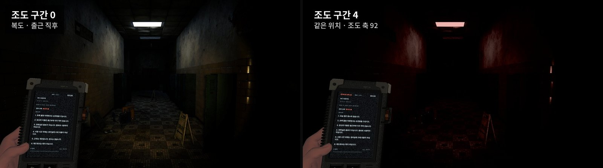
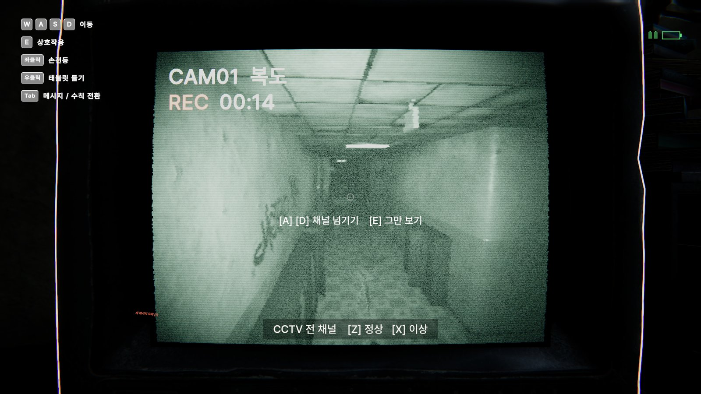
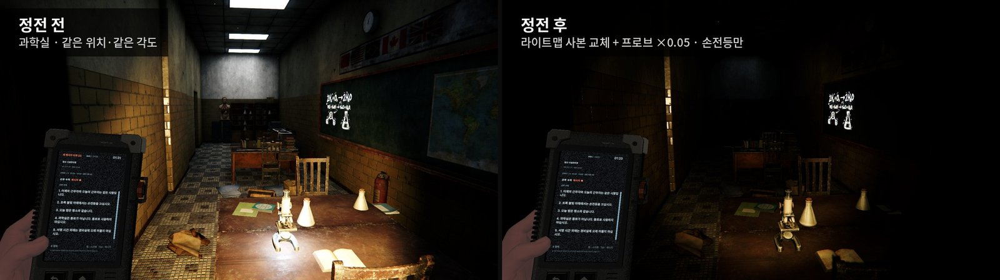
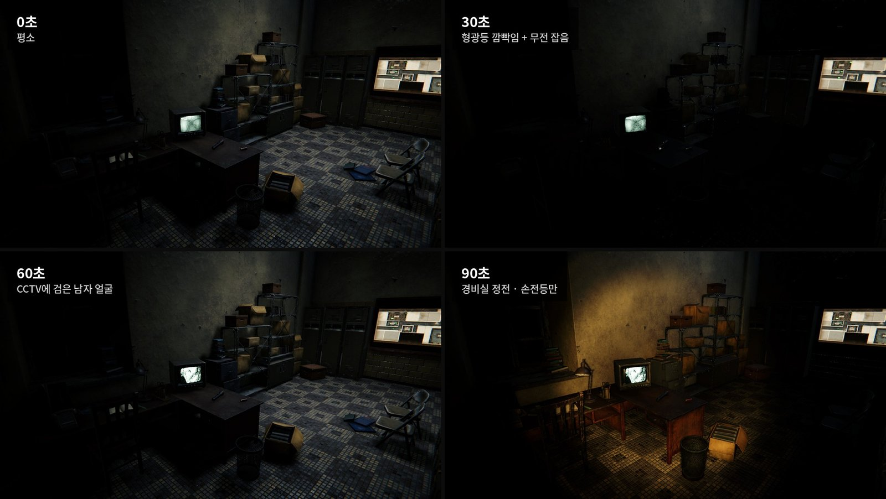
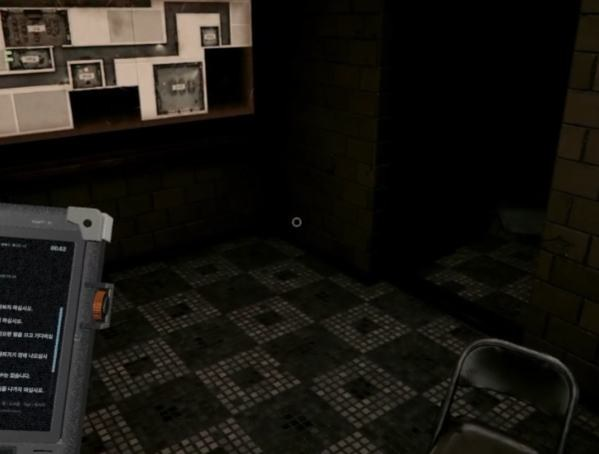
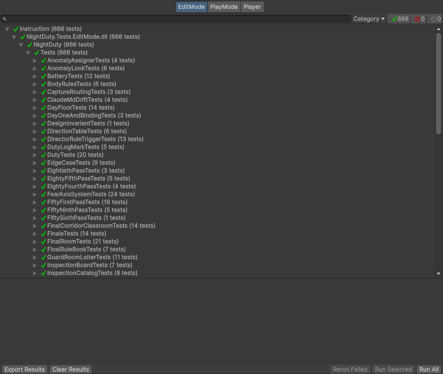

01 — Summary이 페이지의 요점
- 규칙과 화면을 나눈 구조. 판정 로직을 Unity를 모르는 일반 C#으로 두어, 게임을 켜지 않고 EditMode 테스트 666개와 수백 판 단위 밸런스 시뮬레이션을 돌렸습니다.
- 빌드에서만 난 문제. 에디터에서는 보이지 않던 문제 3건을 고쳤습니다. 두 건은 빌드에서 직접 발견해 증상을 좁혀 보고했고, 셰이더 건은 빌드 전 점검에서 AI가 찾았습니다. 그중 한 건은 근본 원인을 고치지 않고 남겼고, 그 한계도 적었습니다.
- AI 제안을 고르고 되돌린 기록. 조우 편성 보정안은 기획 의도와 맞지 않아 기각했고, 먼저 적용된 조명 해결안은 같은 조건에서 비교해 되돌렸습니다. AI 추천대로 정한 작은 결정도 함께 적었습니다.

INSTRUCTION 플레이 영상 · YouTube02 — Game & Role게임과 제 역할
야간 경비원이 되어 태블릿의 근무수칙을 지키며 5일 동안 학교를 순찰합니다. 하루는 출근 → 회사 문자 지시 → 점검 → 몬스터 조우 → 판정 → 퇴근 · 근무일지 순서로 흐릅니다.
수칙을 어기면 보이지 않는 청각 · 조도 · 배치 축이 오르고, 오를수록 학교의 소리 · 조명 · 배치가 변합니다. 한 축이라도 끝까지 오르면 붙잡혀 그 밤을 다시 시작합니다. 수칙을 잘 지키면 신뢰가 오르는데, 신뢰가 높을수록 수칙서 글자가 바뀌는 변조, 수칙과 반대인 회사 문자(역설), 두 수칙이 부딪히는 딜레마가 늘어 숙련된 플레이어일수록 수칙 자체를 의심하게 됩니다.



팀과 역할
| 이름 | 역할 | 맡은 일 |
|---|---|---|
| 이성현 | 시스템 프로그래밍 시스템 기획 | 수칙 판정 · 공포 축 · 편성(수칙 덱 · 조우 · 문자) 규칙과 데이터, 판정 센서(문 · 손전등 · 응시 · 근접 · 공간 출입), 공포 디렉터, 판정 결과로 조명 · 정전 · CCTV · 조우 · 붙잡힘 흐름 · 경비실 · 사운드를 구동하는 코드, 게임 규칙 · 수칙 공동 기획 |
| 김진선 | 클라이언트 프로그래밍 | 게임 플로우 · 씬 전환, 1인칭 조작, 태블릿 · 결과창 UI, 공포 연출 프리셋, 축별 사망 컷신, 화면 효과, 개발자 모드, 형상관리 |
| 김현웅 | 기획 · 사운드 | 사운드 리소스 제작(VARCO Sound), 게임 수칙 공동 기획, 시나리오 |
| 박재은 | 아트 | 맵 구성, 소품, 몬스터 모델 · 디자인(VARCO 3D), 애니메이션, UI |
프로그래머 둘은 판정 · 런타임 연동(저)과 조작 · UI · 컷신(김진선 님)으로 나눴습니다. 김진선 님이 무엇을 어떻게 보여 줄지(연출 프리셋, 컷신, 화면 효과, UI)를 만들었고, 저는 판정과 언제 · 어디서 무엇을 부를지(디렉터 · 편성), 그리고 판정 결과에 따라 조명 · CCTV · 조우 몬스터를 움직이는 코드를 맡았습니다. 서로의 파일은 고치지 않기로 정하고, 두 파트는 이벤트(EventBus)와 공개 API로 연결했습니다. 예외는 두 번입니다. 디버그 화면을 하나로 합칠 때 제 결정으로 김진선 님 개발자 모드 파일에 직접 합쳤고, 공개 API가 없던 근무 종료 시각은 GameTime의 비공개 필드를 리플렉션으로 바꿨습니다(NightRunDriver.MatchShiftEnd). 다시 한다면 API를 요청하겠습니다.
- 고치지 않고 확장하기. 김진선 님의 1인칭 조작 코드는 그대로 두고 실행 순서 앞뒤에서 감도를 보정했고, 사망 컷신 Timeline도 그대로 둔 채 재생되는 인스턴스만 보정했습니다.
- 씬 충돌 줄이기. 근무 씬 전용 컴포넌트는 씬 파일 대신 실행 시 코드로 붙여(
RuntimeInitializeOnLoadMethod) 씬 병합 충돌과 Git LFS 잠금 대기를 줄였습니다. - 아트와 병렬로. 모델이 확정되기 전에는 대역(임시 모델, Stand-in)으로 연출을 먼저 만들고, 모델이 오면 파일만 교체했습니다.
03 — Architecture구조 — 규칙(Core)과 화면(Flow)
판정 로직은 Unity를 모르는 일반 C#으로, 화면에 그리는 일은 MonoBehaviour로 나눴습니다. Core는 Flow를 모르게 asmdef로 막고, Core→Flow는 EventBus 이벤트로만 알립니다.
Flow · MonoBehaviour
판정 센서 — 공간 출입, 손전등 원뿔(15° · 8m) + 레이캐스트 가림, 응시, 자세, 달리기를 0.1초 간격으로 측정
조명 · 정전, CCTV, 조우 연출, 붙잡힘, 오디오
NightRun.Send ← EventBus
BandChanged 등
Core · NightDuty.Core.asmdef (참조 없음)
판정 책(수칙별 판정기) · 공포 축 0–99 · 구간(축 0–99를 나눈 단계, 그 밤엔 내려가지 않음)
공포 디렉터 · 편성(시드 난수, 같은 시드는 같은 결과) · 점검표 정산
Flow는 NightRun의 공개 정적 멤버로 밤을 시작 · 진행 · 종료시키고 지금 상태를 읽습니다. 반대 방향인 Core→Flow에는 호출이 없고, 「구간이 바뀌었다」 같은 이벤트(BandChanged · DirectionEmitted · Captured)만 나갑니다. 연출은 축 수치가 아니라 구간을 봅니다.
- 게임을 켜지 않고 검증. Core는
new만 하면 돌아가므로 자동 테스트와 밸런스 시뮬레이션을 에디터에서 바로 돌렸습니다. 테스트 폴더 - 의존 방향을 컴파일 단계에서 강제. asmdef로 Core가 Flow를 참조하지 못하게 막아, 「축이 올랐으니 Core에서 바로 불을 끄자」 같은 우회를 차단했습니다.
- 새 코드의 자리가 정해짐. 새 코드가 고르는 일이면 편성 · 디렉터, 판단하는 일이면 판정 · 점검, 숫자를 올리는 일이면 축, 그리는 일이면 Flow에 둡니다.
NightRun)가 정적 클래스라 테스트마다 초기화가 필요했고 플레이 세션 사이 리셋도 따로 처리했습니다. 인스턴스로 만들고 주입하는 구조를 쓰겠습니다.04 — Build빌드에서만 난 문제
세 건 모두 에디터에서는 보이지 않았습니다. 두 건은 제가 빌드를 플레이하다 발견해 증상을 좁혀 보고했고, 셰이더 건은 빌드 전 점검에서 AI가 찾았습니다.
시점이 가끔 크게 휙 꺾임
개발 후반 · 직접 발견- 발견
- 빌드를 직접 플레이하다 발견했습니다. 「마우스에 뭔가 뚝 뚝 끊기면서 확 꺾이는 현상이 조금씩 있어」
- 원인
- 1인칭 조작 코드(김진선 님 담당)는
회전 = 마우스 이동 × Time.deltaTime × 감도였습니다. 마우스 이동(Input.GetAxis)은 이미 그 프레임 동안 쌓인 양이라 프레임 시간이 두 번 곱해져, 끊긴 프레임의 회전은 프레임 시간의 제곱으로 커졌습니다. 빌드는 프레임 제한이 없어(수직 동기 0) 보통 프레임이 수 ms였고, 20–50ms 끊김도 평소의 몇 배가 됐습니다. - 1차 시도
- 프레임 시간 상한(1/20초)을 걸었지만 에디터 기준 값이라 빌드의 작은 끊김을 잡지 못했습니다.
- 해결
LookSpikeGuard가 조작 코드보다 먼저(실행 순서 −200) 돌며, 최근 「보통 프레임 시간」을 느린 평균으로 따라가고 이번 프레임 감도에보통 ÷ 이번을 곱했다가LateUpdate에서 되돌립니다. 끊김 차이를 줄이려고 빌드 프레임을 144로 묶기로 제가 정했습니다(FrameRateCap). 모의 실험(평소 5ms에 30ms 끊김 한 번)에서 회전량 90 → 15.
감도 × (보통 dt ÷ 이번 dt) → 끊긴 프레임은 쌓인 마우스 이동만큼만 회전LookSpikeGuard.cs · AI 작성// LookSpikeGuard.Update — 실행 순서 -200, FPController보다 먼저 float dt = Time.deltaTime; float k = ScaleFor(dt, _steady); // 보통 ÷ 이번 (0.03~3배) _steady = NextSteady(_steady, dt); // 보통엔 8%, 끊김엔 2%만 따라감 // … _saved = _player.mouseSensitivity; _applied = _saved * k; _player.mouseSensitivity = _applied; // 이번 프레임만 감도 × k _scaled = true; // LateUpdate — FPController가 돈 뒤 원래 감도로 private void LateUpdate() { Restore(); }- 한계
- 이 보정은 끊긴 프레임만 상쇄합니다. 프레임이 고르면 배수가 1이라 원래 식이 그대로 남아, 같은 손 움직임에도 초당 회전량이 프레임 시간에 비례해서 60fps로 꾸준히 도는 PC는 144fps보다 계산상(16.7 ÷ 6.9ms) 약 2.4배 더 돕니다(실측 아님). 144fps 고정이 이 차이를 가렸습니다. 근본 원인은 마우스 값에
deltaTime을 곱하는 한 줄인데, 팀원 코드라 마감 직전에는 고치지 않았습니다. 다시 한다면 담당자와 합의해 그 곱을 빼고 보정 컴포넌트는 지우겠습니다.
발광이 꺼지고 머리카락 카드가 네모로 보임
빌드 전 점검 · AI 발견- 발견
- 빌드 전에 「다른 문제들은 없을지」 점검을 맡겼고, AI가 찾아냈습니다. 제가 먼저 본 문제는 아닙니다.
- 원인
- 빌드는 빌드에 포함된 재질이 쓰는 키워드 조합만 셰이더 변형으로 넣습니다. 실행 중 코드로 켜는 조합(URP Lit
_EMISSION, Unlit 알파 테스트 · 반투명)이 빠졌습니다. - 해결
- 에디터 도구
ShaderKeepBuilder가 빌드 재질을 훑어 빠진 조합마다 키워드를 켠 보존 재질을 생성합니다. 빠져 있던 조합 21개(Lit 18 · Unlit 3)를 복구했고, 조합이 다시 빠지면 실패하는 테스트를 추가했습니다. ShaderKeepBuilder.cs
빌드에서만 소년이 머리를 박지 않음
개발 후반 · 직접 발견- 발견
- 빌드를 플레이하다 발견해, 릴리스와 개발자 빌드 모두에서 안 나온다는 것까지 함께 보고했습니다. 「릴리스로 빌드하면 소년 머리박는게 적용이 안된다 · 어제 프리테스트 개발자 빌드본에서도 안 나왔다」
- 원인
- 애니메이터가 없는 대역 모델에
AnimationClip.SampleAnimation으로 클립을 재생했는데, 레거시가 아닌 클립은 빌드에서 Animator 없이 샘플링되지 않았습니다. 소리는 났지만 뼈는 움직이지 않았습니다. - 해결
- 임시 씬으로 릴리스 빌드를 떠 머리 이동량을 실측했습니다(0m → 0.29m, 에디터와 같게 복구). 클립을 레거시로 전환(GUID · 곡선 유지)하고 대역 생성 도구도 고쳤으며 회귀 테스트를 추가했습니다.
에디터에서 된다고 빌드에서도 되는 건 아니었습니다. 플랫폼 차이가 의심되면 작은 빌드로 재현해 숫자로 확인합니다.
05 — Highlights구현 하이라이트
판정 결과를 화면으로 옮기는 부분입니다. 무엇이 바뀌어야 하는지와 기준은 제가 정했고, 코드는 대부분 AI가 작성했습니다.
구간이 오르면 화면에서 바뀌는 것
AmbiencePlayer ← BandChangedIlluminanceMapLayout*MapCaptureDirector ← CapturedCaptureDirector가 처형 컷신(김진선 님 제작)을 재생하고 사망 카드를 띄운 뒤 그 밤을 다시 시작합니다.
조도와 배치 변화는 제가 요구했습니다. 「조도 구간 3 변화에 구간 4 효과처럼 일부 조명만 빨개지거나 깜빡이는 현상」, 「축이 오를 때마다 벽이나 천장에 오브젝트가 생긴다던가, 복도에 가짜 문들이 늘어난다던가 하는 기괴한 변화」(개발 후반). 소품 자리 찾기와 생성 코드는 AI가 작성했습니다.
안 볼 때만 바꾼다
설계 문서(CLAUDE.md)에 「시야 규약은 예외가 없습니다.」라고 적어 둔 규칙입니다. 배치 변화와 등장은 플레이어가 보고 있지 않을 때만 일어나고, 보이는지 판단할 수 없으면 보이는 것으로 처리해 움직이지 않습니다.
- 배치 소품 — 소품 몸의 점 7개가 모두 화면 밖이거나 가려졌을 때 하나씩 생깁니다(0.25초마다 확인).
- 교실 소년 — 플레이어가 교실 안이고 소년 자리가 화면 밖이거나 가려진 순간에 등장합니다.
- CCTV 속 사람 — 길 두 끝을 그 채널 카메라에 안 보이는 곳까지 늘려, 화면 밖에서 걸어 들어오고 걸어 나간 뒤 사라집니다.

공포 디렉터
- 조우를 상태 기계로 진행 — 대기 → 예고 → 등장 준비 → 대면 → 정리 → 끝
- Left 4 Dead식 긴장도 게이지 — 축적 → 절정(70) → 해소(35) → 휴식
- 긴장도 50 미만일 때만 가짜 놀람 (하룻밤 3–8회)
구운 조명에서 실시간 정전
- 직접 플레이하다 본 문제에서 시작했습니다. 「소등 조우 때 소등은 되는데 라이팅은 계속 유지돼」 구운 빛이 남는다는 진단과 구현은 AI가 했습니다.
- 라이트맵은 실행 중에 끌 수 없어, 씬 시작 때 어둡게 만든 라이트맵 사본을 만들고 정전 때
lightmapIndex만 교체(앞서 불 꺼진 교실에 쓰던 방식을 소등 방으로 넓힘) - 라이트 프로브 SH 계수도 낮추고, 형광등 발광은
MaterialPropertyBlock으로 끔(공유 재질 오염 방지)
처형 컷신 시선 보정
Update에서 돌리면 Animator가 덮어써서LateUpdate에서 보정 회전- 머리 뼈가 아니라 얼굴 중심에서 재서 시선 오차 0.04–0.77° (대역 3종, 사람 나무의 먼 옆 얼굴은 최대 4.2°)
- 팀원의 컷신 Timeline은 그대로 두고 재생 인스턴스만 보정
경비실 버티기 방지
- 수치를 정해 지시했습니다. 「약 30초 형광등 깜빡임·무전 잡음(문구 없음) · 약 60초 CCTV가 검은 남자 얼굴 · 약 90초 정전, 그래도 남으면 붙잡힘 …」
- 이 수치가 그대로 상수가 됐습니다. 30 · 60 · 90초, 정전 뒤 15초 더 남으면 붙잡힘(2일차부터)
- 판단은 Core, 연출은 Flow. 문턱을 오가도 시간이 초기화되지 않음



[Test] public void 머문_시간에_따라_깜빡임_CCTV_얼굴_정전으로_간다()
{
var g = new GuardRoomLoiter(); // 씬 없이 new로 생성
Stay(g, 29f); Assert.AreEqual(LoiterStage.None, g.Stage);
Stay(g, 2f); Assert.AreEqual(LoiterStage.Flicker, g.Stage);
Stay(g, 30f); Assert.AreEqual(LoiterStage.CctvFace, g.Stage);
Stay(g, 30f); Assert.AreEqual(LoiterStage.Blackout, g.Stage);
Stay(g, GuardRoomLoiter.CaptureGraceSeconds);
Assert.IsTrue(g.ConsumeCapture()); // 정전 뒤에도 남으면 붙잡힘
}
06 — Working with AIAI와 일한 방식
Unity 에디터를 띄워 둔 채 Claude 데스크톱 앱(Opus 5.5)을 Unity CLI의 MCP 서버로 연결해 명령을 내렸습니다. 코드 · 씬 수정, 테스트 · 디버깅, QA 플레이까지 에디터 작업은 대부분 AI가 했습니다. 저는 무엇을 만들지와 어떤 숫자가 맞는지를 정하고, 결과를 받아들일지 판단했습니다.
에이전트를 나눠 쓴 방식
| 방식 | 이렇게 시켰습니다 | 결과 |
|---|---|---|
| 조사 → 회의 → 보고 | 여러 에이전트에게 분야별 자료를 조사하게 한 뒤 회의 · 검토를 거쳐 보고하게 함. 「긴장감 컨트롤러도 다시 한번 전문가 에이전트들과 회의」 | 공포 분위기를 만드는 방법을 여러 자료에서 종합한 선택지로 받아 고름. 회의 결과는 제안서 문서로 남김 (예: 「야간근무 3차 회의 — 경비원다운 [근무 지시]」) |
| 설계와 QA를 동시에 | 「설계만 해볼래? 하면서 에이전트 하나는 계속 버그수정/의도한 대로 작동하는지를 돌려봐」 | QA 에이전트가 새 근무 지시 기능을 플레이로 점검해 버그 2건 수정. 이어서 독립 QA가 5건을 고치고, 판단이 필요한 것은 「남은 제안」으로 따로 보고 |
| 구현 뒤 독립 · 백그라운드 검토 | 「프로젝트에 새로 구현한 부분들 버그 있는지 확인해주고 고쳐줘」 | 독립 검토로 버그를 고치고 테스트를 더해 EditMode 666/666. 별도 백그라운드 검토에서는 AI가 금지된 방의 지시가 풀리지 않아 03:30 시계가 영영 멈출 수 있는 결함을 찾아 수정(제가 찾은 결함이 아님) |
조사 · 회의, QA 플레이, 구현 뒤 검토는 한 세션에 몰지 않고 따로 맡겼습니다. 에이전트는 고친 것과 판단이 필요한 것을 나눠 보고했고, 받아들일지 말지는 제가 정해 CLAUDE.md 개정 기록에 남겼습니다.
한 줄 지시를 나눠 맡기기
AI가 올린 피드백 항목(1–7번)을 받고 개발 후반에 보낸 실제 지시입니다. 같은 줄 안에서 바로 고칠 것, 시뮬레이션을 먼저 돌릴 것, 분석만 할 것을 나눴습니다.
「평가 문구 2회 · 정시 알림 두 통 · 결근 원인 축 · 1·2·4번 시뮬 · 5번 문제 분석 · 7번 독촉 · 3번 개선 뒤 QA」CLAUDE.md 개정 기록에 남은 원문
바로 고칠 것
평가 문구 · 정시 알림 중복 · 결근 원인 축 · 3번(창밖 조우 날짜) · 7번(밀린 점검 독촉 문자)
그 작업에서 구현하고 테스트를 더함
시뮬 먼저
- 1번(밤 안에서 연출 구간 올리기) — 결과를 본 뒤 「1번은 적용해줘」. 밤 안에서 연출이 한 구간 오르는 비율 보통 2 → 45%
- 2번(신뢰 구간 기준) — 다시 보니 쓰이는 곳이 없는 값이라 바꾸지 않음(AI가 앞선 지적을 정정)
- 4번(변조 대상 쏠림) — 「4번 원래 의도는 처음 보는 수칙도 신뢰가 높으면 변조」로 의도를 다시 설명해 반영. 한 수칙 쏠림 50 → 12%
분석만
5번(조우를 놓치는 경우) — 구현 없이 분석만 받았고, AI는 이월 보정을 권했습니다.
이어서 「5번 놓치는 경우 분석」으로 다시 재게 했고, 이것이 고정 편성으로 이어졌습니다(07절).
AI 제안에 대한 판단 기록
| 유형 | AI 안 · 대상 | 제 판단 | 결과 |
|---|---|---|---|
| 채택 | 시체 낙하를 2일차로 고정하고 강도를 낮추는 추천안 | 강도를 낮춰서 조금 더 일찍 | 13종을 모두 본 회차가 늘어남(시뮬레이션, 수치는 07절 표) |
| 위임 | QA 뒤 제가 결정할 항목을 추천과 함께 정리해 보고 | 1,2,3을 추천한 대로 하고, 4의 권장부분도 처리해줘 | 추천안대로 반영하고 QA를 한 번 더 |
| 기각 | 못 본 조우를 다음 뽑기에 가산(이월)하고 차단 조건 면제 — 예상 75 → 85~90% | 날짜마다 정해 둔 조우를 그날 보여 주는 기획 의도를 우선했습니다. 모든 연출에서 축 조건 제거. 날짜 편성 … 이월은 없어. 의도한 날짜에 무조건 목격해야 해 | 고정 날짜 편성으로 전환 (07절) |
| 채택 후 되돌림 | 고정 편성 변주 — 같은 날 순서 섞기 · 날마다 빈 칸 · 수칙을 어기면 다음 날 후속 조우 | 축 조건을 제거하고 너무 고정이니 매력이 떨어진 느낌이라 셋을 채택했다가, 후속 개념은 없애줘. 버그가 너무 많을 것 같네 | 후속은 두 번에 걸쳐 모두 빼고 순서 섞기 · 빈 칸만 남김 |
| 되돌림 | 시야를 돌리면 창가 벽이 밝아지는 문제에 플레이어 카메라 오클루전 컬링 끄기를 먼저 적용(렌더 장당 약 +1ms) | 성능에 큰 문제가 생길 가능성이 있나?→ 대안으로 달빛을 꺼보고 한번 비교해봐 | 컬링 끄기는 같은 작업 안에서 되돌림. 에디터 측정 렌더 장당 원래 4.4 · 컬링 끔 5.4 · 달빛 끔 3.5ms, 달빛 끔 채택(실내 11곳 × 12방향 화면 차이 0) |
| 폐기 | AI와 따로 만들어 쓰던 디버그 콘솔 | 우리 것은 폐지하고(가독성이 떨어짐) 진선님 것에 합쳐 줘 | 김진선 님 개발자 모드 한 곳으로 합침(합치는 방식은 제가 진선님 파일에 통째로를 고름) |
조명 문제의 측정(6° 간격으로 한 바퀴 렌더해 화면 평균 밝기 기록 — 특정 각도에서 48 → 71로 튐)과 원인 진단(오클루전 컬링이 달빛 그림자 캐스터도 시야 기준으로 걸러 냄)은 AI가 했습니다. 저는 문제를 발견하고, 두 안을 같은 조건에서 비교하게 한 뒤 골랐습니다.
AI가 놓친 것을 다시 짚은 경우
조우 효과음에 남은 현악기
AI 수정 → 제 지적 → 재수정- 처음
- 조우 효과음의 현악기를 지적한 뒤, AI는 조우 스팅어만 다른 소리(Horror Hit)로 바꿨습니다.
- 지적
- 플레이해 보니 여전히 들렸습니다. 「조우 효과음이 아직도 전에 지적한 현악기」
- 원인
- 강도 3 이상 조우의 대면마다 따로 깔리던 떨리는 현(8.2초 트레몰로)이 남아 함께 울렸습니다. AI가 스펙트럼으로 확인했습니다.
- 재수정
- 그 소리의 구독 · 키를 지우고 회귀 테스트
조우에_현악기_긴장음은_없다를 더했습니다.
시점 튐 상한
AI 수정 → 빌드에서 재발 → 재수정- 처음
- 도서관에서 시점이 튄다는 보고에, AI는 프레임 시간이 1/20초를 넘을 때만 감도를 줄이는 상한을 넣었습니다.
- 재발
- 빌드에서 다시 플레이하다 같은 증상을 찾았습니다(04절).
- 원인
- 빌드는 프레임 제한이 없어 보통 프레임이 수 ms라, 20–50ms 끊김은 1/20초 상한에 걸리지 않았습니다.
- 재수정
- 상한 대신 최근 보통 프레임 시간을 기준으로 매 프레임 감도 배수를 정하도록 바꿨습니다(개발 후반).
그 밖에 도서관 노란 얼굴이 벽 · 책장을 뚫고 다니는 것을 찾았고, 벽을 무시한 옛 NavMesh를 타고 있던 원인을 AI가 찾아 전용 에이전트 타입으로 런타임에 다시 굽게 고쳤습니다.
AI에게 건 규칙
CLAUDE.md기록 규칙
- 「재지 않은 것을 적지 마십시오」(2026-09-21) — 문서가 반복해서 틀린 원인이 확인하지 않고 쓴 문장이었기 때문에 넣었습니다.
- 구현이 끝나면 개정 기록을 남기고, 바뀐 옛 값은 「되살리지 마십시오」 목록에 올림 — 새 세션이 옛 값을 다시 가져오지 않게 하려는 장치로, 100곳 넘게 기록이 쌓였습니다.
- 설계 문서와 코드 값이 어긋나면 실패하는 테스트(
DesignDriftTests)
인계서 · 작업 규칙도구 · 권한 규칙
- git 명령은 AI가 실행하지 않음 — 커밋 · 병합 · LFS 잠금은 제가 직접
- 병렬 에이전트일 때 에디터 조작은 메인 세션 한 곳에서만
- 공유 타입 시그니처를 모든 프롬프트에 똑같이 넣고 「자기 것만 정의하고 나머지는 이름으로만 참조하라」고 지시
새 세션 온보딩 — 인계서는 처음 맡은 세션에게 「모르는 건 추측하지 말고 unity__eval로 직접 재십시오.」라고 적어 두었습니다.
07 — Troubleshooting조우 편성 — 다시 재고 고정 날짜로
미숙한 플레이어가 조우를 다 못 보는 문제
개발 후반 · 시뮬레이션- 상황
- 감각 수치와 확률로 조우를 뽑던 편성(확률 편성)에서, 미숙한 플레이어는 늦은 슬롯이 꺼져 조우 13종(측정 당시 기준, 이후 한 종을 폐기해 12종)을 다 보지 못했고 붙잡힘 원인도 배치 축에 쏠렸습니다.
- 측정
- 실제 편성 코드를 그대로 쓰는 시뮬레이터로 숙련도별 가상 플레이어 400판을 돌렸습니다. 미숙 플레이어가 13종을 모두 본 회차는 21%였습니다. Core가 Unity와 분리돼 있어 가능했습니다.
- 조정
- 날짜 흐름을 바꾸고, 시체 낙하를 2일차로 고정해 강도를 낮췄습니다(수치는 아래 표).
- 다시 재기
- 플레이테스트에서 의도한 조우가 종종 나오지 않았습니다. 그래서 「5번 놓치는 경우 분석」을 지시해, 편성됐는가가 아니라 실제로 마주쳤는가로 다시 세게 했습니다. 미숙은 33%(편성 기준 76%)였습니다. 시뮬레이션에서는 위험한 분위기 때문에 늦은 조우가 꺼졌고, 시뮬레이션 밖에서는 방아쇠(공간 들어감 · 머묾)를 그 시간창에 못 맞추거나 조기 퇴근하면 조우를 놓쳤습니다. 직접 플레이에서는 조우를 보기 전에 퇴근 트리거가 켜지거나 플레이어가 움직이지 않는 사이 시간이 흘러 밤이 끝났습니다.
- 다시 보고
- 이후 직접 플레이에서도 같은 일이 있었습니다. 「… 수칙과 지시로 트리거는 된 것 같은데 연출이 안 나왔어」 AI가 분석해 조기 퇴근이 남은 조우를 지워 버리는 것 등을 확인했고, 남은 조우가 있으면 조기 퇴근부터 막도록 고쳤습니다.
- 판단
- AI의 이월 보정안 대신, 축 조건을 없애고 날마다 정해진 조우를 보여 주는 고정 날짜 편성으로 바꿨습니다. 03:30에 남은 조우가 있으면 시계를 붙들어, 그날의 조우가 끝나기 전에는 다음 날로 넘어가지 않게 했습니다. 이후 AI 변주안 중 같은 날 순서 섞기 · 날마다 빈 칸만 남겼습니다(06절 판단 기록).
- 검증
- PlayScene에서 4 · 5일차를 진행해 날짜표대로 나오는지 확인하고 편성 테스트로 묶었습니다.
- 한계
- 모든 수치는 가상 플레이어 시뮬레이션이며 실제 플레이 데이터가 아닙니다. 고정 편성 뒤의 목격률은 시뮬레이션으로 다시 재지 않았습니다.
붙잡힘 원인은 점검 항목의 벌칙 축을 실제 원인 축과 맞추고, 밤마다 세 축의 수칙이 최소 한 장씩 나오게 해서 고르게 만들었습니다(미숙 배치 / 조도 / 청각 67 / 16 / 17% → 34 / 31 / 34%, 시뮬레이션).
이 페이지의 시뮬레이션 수치
①②는 버린 확률 편성을 조정하던 단계의 값입니다. 확률 편성에서 기준을 바꿔 다시 재 보니 13종을 모두 마주친 판이 미숙 33%였고, 이후 고정 편성으로 전환했습니다.
| 무엇을 쟀나 | 방식 | 판 수 | 결과 |
|---|---|---|---|
| 13종 목격률 (편성 기준) | 실제 편성 코드 · 숙련도별 가상 플레이어 | 400 / 숙련도 | ① 날짜 흐름: 미숙 21 → 54% ② 이어서 시체 낙하: 보통 78 → 100%, 미숙 55 → 75% |
| 13종 목격률 (실행 기준) | 같은 시뮬레이터, 실행 여부로 다시 셈 | — | 미숙 33% (편성 기준 76%) |
| 붙잡힘 원인 분포 (미숙) | 추정 시뮬레이션 · 배치 / 조도 / 청각 | — | 67 / 16 / 17% → 34 / 31 / 34% (최종) |
| 신뢰 3구간 도달 (보통, 3–4일차) | 구간 경계값 조정 뒤 | 500 | 0 → 92% |
08 — Limits한계와 다시 만든다면
| 한계 | 무엇이 부족했나 | 다시 한다면 |
|---|---|---|
| 위반 피드백 | 플레이테스트에서 「위반 패널티가 명확했으면」이라는 의견이 많았습니다. 어겨도 축 수치만 조용히 올랐기 때문입니다. | 위반 즉시 화면 · 소리 · 태블릿으로 알림 |
| 빌드 프로파일링 | 에디터에서 FPS · 렌더 시간은 일부 쟀지만 빌드 기준 FPS · 메모리 · 드로우콜 · GC는 재지 않았고, 빌드 용량(약 2.1GB, 대부분 4K 텍스처)도 줄이지 못했습니다. | 프로파일러로 기준선부터 |
| 통합 테스트 | 자동 테스트가 EditMode 위주라 씬 단위 동작은 직접 플레이로 확인했습니다. | PlayMode 테스트 추가 |
| 시점 보정 | 끊김만 상쇄하고 프레임에 따른 감도 차이는 남겼습니다(04절). | 조작 코드에서 deltaTime 곱 제거 |